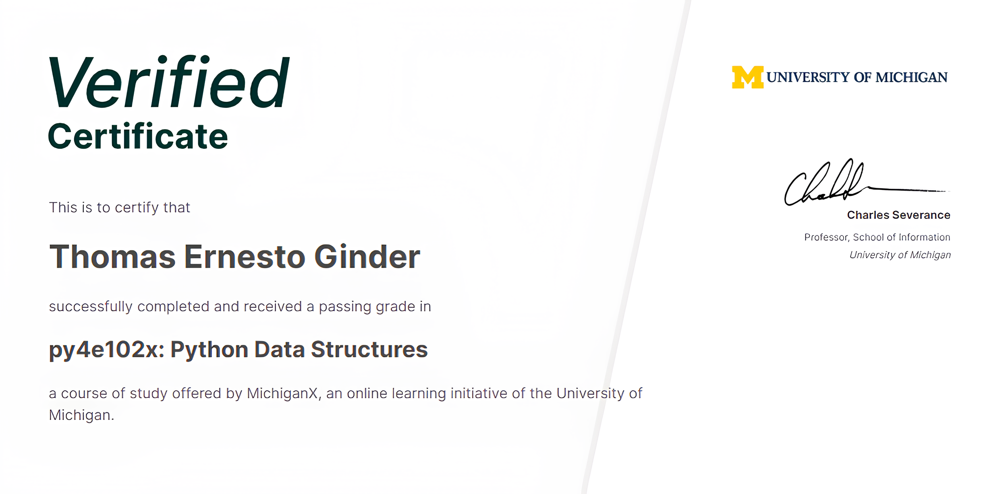
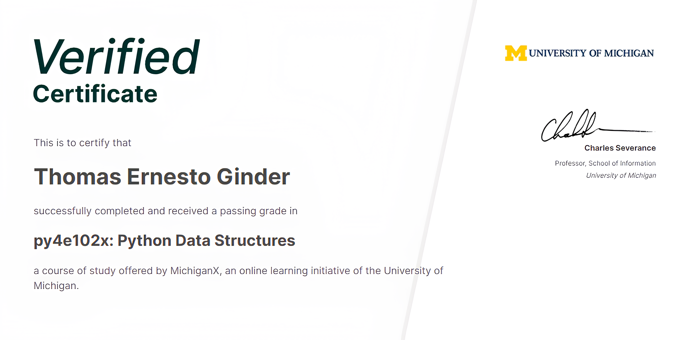

SIEMENS Step 5/7
I graduated with 87/100 in the Maintenance Technician studying path from I.P.S.I.A. A. Meucci Professional High-School in Cagliari, Sardinia. I also took an electrician regional qualification with 94/100. I loved study electrical subjects, but most important, I was fascinated by the programming language SIEMENS Step 5 and Step 7. I loved the logic behind and the satisfaction of creating and fixing codes, especially the tough ones.


 
